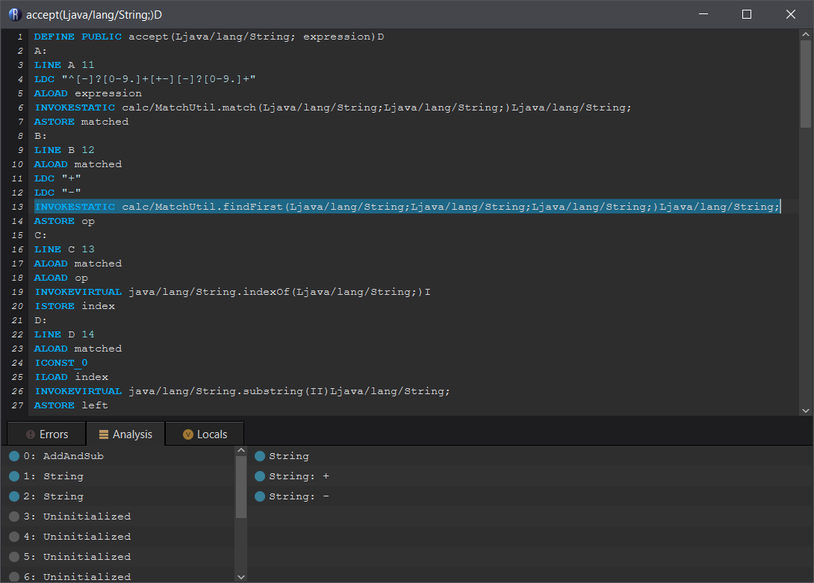
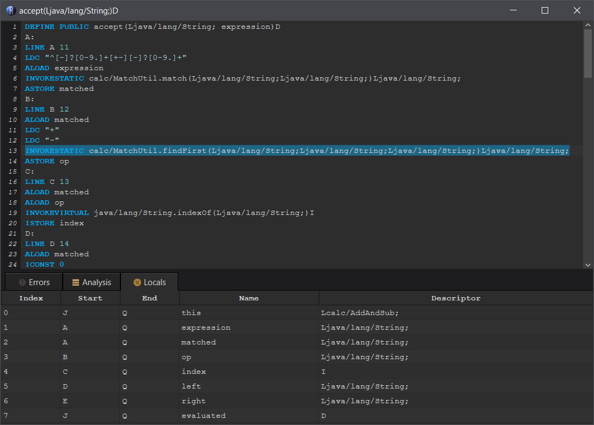

Assembler: Modifying fields and methods
How do you access the assembler?
When you right click a field or method definition in Recaf selecting "Edit with assembler" will open the assembler window. Fields and methods both use the same assembler system, but each use a different syntax for defining field or method specific properties.
Method Assembler
The method assembler lets you edit methods as text.
Features
- Tab completion
- Keywords (instruction opcodes)
- Instruction specific content (class types, field declarations, method declarations).
- Code verification and analysis. After each keypress the code is analyzed for errors. Any error is shown both on the line number that caused it and in the bottom of the window in a list (clicking on list items will jump to the error line). In most cases the error is on the line that it says it is on. For more information on errors, see the post on understanding errors [click here for that].
- Named variables
- The code analysis process allows referencing variables by names rather than indices.
- Classes that contain debug information will automatically disassemble variable instructions using variable names. If no debug information is found then the disassembler will fall back to using indices.
- Right click context actions
- Labels: Navigate to the instructions that reference the label
- Jumps: Navigate to the jump destination
- Switches: Navigate to the switch case labels
- Variables: Navigate to other variable instructions that refer to the same variable name/index
- Class references: Show context menu for referenced class
- Field references: Show context menu for referenced field
- Method references: Show context menu for referenced method
Example
Given the following Java code, lets take a look at the assembler
@Override public double accept(String expression) { String matched = MatchUtil.match("^[-]?[0-9.]+[+-][-]?[0-9.]+", expression); String op = MatchUtil.findFirst(matched, "+", "-"); int index = matched.indexOf(op); String left = matched.substring(0, index); String right = matched.substring(index + 1, matched.length()); expression = expression.replace(matched, String.valueOf(switch (op) { case "+" -> this.evaluate(left) + this.evaluate(right); case "-" -> this.evaluate(left) - this.evaluate(right); default -> throw new IllegalStateException(); })); return this.evaluate(expression); }
|  |  |
Analysis
The screenshot on the left shows the Analysis tab of the assembler window. This tab is shows information about the current line you have your cursor on. In the picture I have selected a line to make it more visible. There are two columns...
The left column shows the value of variables at the given point. For primitive types and strings the exact value is simulated when possible.
The right column shows the stack at the given point. The most recent items of the stack appear on the bottom of the list. In this case we can see that three strings are on the stack. The top of the stack contains - and just below it is +. Below that is an unknown string, loaded from the matched variable.
Locals
The screenshot on the right shows a table displaying the current local variables. Unlike the analysis tab this does not show the value in the variable, just information about the variable.
- Index: The variable's local index
- Start/End: The labels in the method that indicate the scope of the variable
- Name: The variable's name as it was in the source code
- Descriptor: The variable's type
You can immediately jump to any instruction that references a variable by right clicking on it in the table. This brings up the referrer menu.
See also:
Field Assembler
The field assembler lets you edit fields as text.
- The field assembler does not have any specific features at the moment.